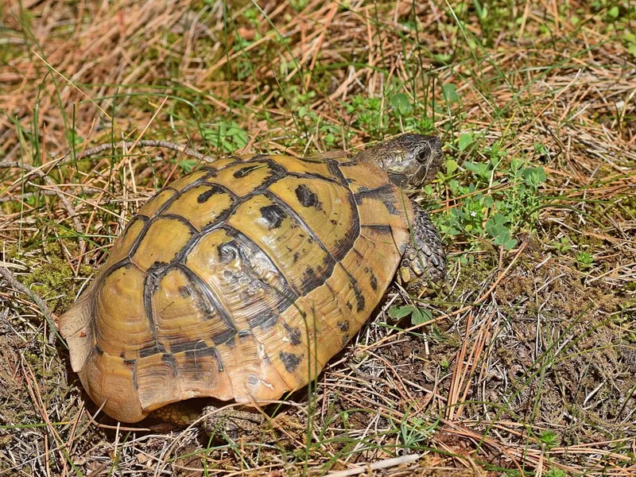

南ヨーロッパの地中海沿岸、岩がちな丘陵と低木の林縁に暮らすリクガメ。EU産CBの流通が安定しており、地中海系リクガメのなかで最も飼育実績が積み重ねられた種のひとつです。

1年後、亀は甲長10〜13cm程度。毎日バスキングゾーンに出てきて日光浴をし、その後ゆっくり草を食べる。その繰り返しが日常になる。観察すると個体差が見えてきて愛着が深まる時期。
10年後の甲長は16〜18cm前後。重さは600〜900g程度が目安。90cmケージがやや手狭に感じ始める個体も出る。食欲は旺盛で、成体のたくましさが出てくる頃。
リクガメは気温が低い日や消化中は動きが少なくなる。病気では？と心配になりやすいが、環境が適切であれば季節的な変化であることが多い。また寿命が長い分、飼い主の生活変化（進学・就職・結婚）をまたぐことを事前に家族で話し合っておくと安心。
⚠ 初心者が最初に失敗しやすいのはUVBと温度管理です。機材を後回しにすると、迎えてから慌てて買い足すことになりがちです。
ヘルマンリクガメは南ヨーロッパの地中海沿岸、スペイン東部からトルコ西部にかけて広く分布しています。典型的な生息環境は日当たりの良い岩がちな丘陵地や、低木や草がまばらに生える半開放的な地中海性植生です。夏は高温乾燥、冬は低温多湿という地中海性気候が基盤で、晴れた日は早朝から太陽光で体を温め活動を始めます。
野生では46科134種以上の植物を食べることが確認されており、タンポポ・アザミなどキク科植物を好む傾向があります。動物性食品はほとんど食べない、ほぼ完全な草食動物です。
亜種は3つ確認されており、日本ではヒガシヘルマンリクガメが多く流通しています。飼育環境下で繁殖した個体が主に出回っているため、人に慣れており環境への順応性が高い個体が多いです。ニシ亜種はヒガシより小型で、最大18cm前後です。
活動に適した温度帯は20〜30℃で、夏は暑さを避けて朝夕に活動します。飼育下ではこの温度勾配をケージ内で再現することが重要です。
野草・葉野菜を主食にします。タンポポ・オオバコ・シロツメクサなどが手に入る季節は積極的に活用してください。チンゲン菜・コマツナ・ケールなども適しています。果物は糖分が多いため少量に留め、タンパク質（動物性食品）は基本的に不要です。
人工フード（レップカルやマズリなど）は主食として利用できますが、繊維質を補うため野草・野菜との組み合わせが推奨されます。カルシウムパウダーを餌に振りかけることで甲羅の形成を助けます。
水は浅めの水入れを常設します。温浴（週1〜2回、30℃のぬるま湯で15分程度）は水分補給と排泄促進に効果的です。
ヘルマンリクガメの飼育に必要な機材を、野生環境からの逆算でまとめます。
飼いたいカメがまだ決まっていない方、またはほかの種も見てみたい方は診断ツールへ。
🐢 あなたに合う亀を診断する（100種対応）ヘルマンリクガメは地中海産リクガメの入門種。温度勾配とUVBを整えれば長く付き合える種です。